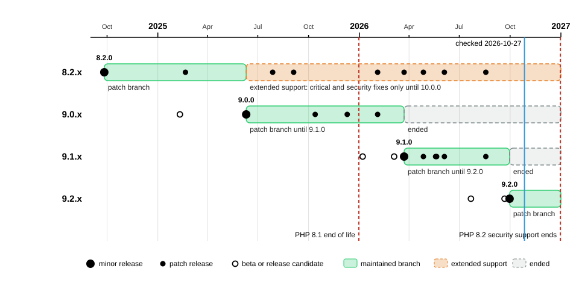
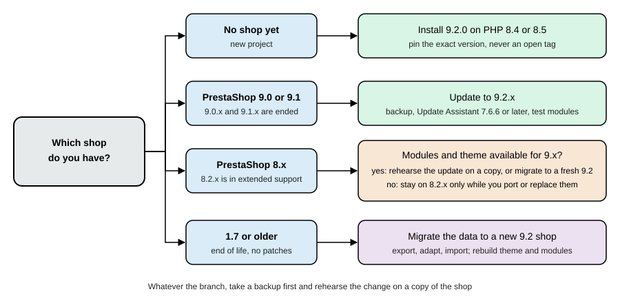

Versions and Support
|
This content was generated with the assistance of AI and should be verified against the official documentation before being relied on in production. |
This page tells you which PrestaShop version to run and for how long it will be looked after. It was written against PrestaShop 9.2.0 (released 2026-09-30) and the 8.2.8 security release (2026-08-18); every date, version and number was checked on 2026-10-27 against the release pages of the GitHub repository, the official developer documentation, the project blog and the files of a local 9.2.0 test shop. Because PrestaShop is software you host, "support" means which branch still receives patch releases, not an uptime promise: the project publishes a lifecycle policy, not an end-of-life calendar, and this page is explicit about the dates that are policy and the dates that are inferred.
It applies to every installation of the open source software. It sits at the start of the PrestaShop subsection, before Installation and Local Environments, because the version you choose decides the PHP version, the Symfony version, the default theme and the extensions you can use. The running example, Pocket Coffee, is a new shop, so it starts on 9.2.0.
How PrestaShop numbers and ships versions
A PrestaShop version has three numbers: major, minor and patch, for example 9.2.0. The project follows semantic versioning as a goal and a published Backward Compatibility Promise: a minor release such as 9.2 "strives to maintain backward compatibility" with 9.1, and breaking changes are only introduced when absolutely necessary. A major release (8 to 9) is allowed to break modules, themes and integrations, and does.
-
Major (8.x to 9.x): a new technology baseline. 9.0 moved from Symfony 4.4 to Symfony 6.4 LTS and required PHP 8.1.
-
Minor (9.1 to 9.2): new features behind a stable API. Feature flags let a new capability ship switched off.
-
Patch (9.2.0 to 9.2.1): bug fixes and security fixes only.
-
Pre-releases:
alpha,betaandrctags (for example9.2.0-beta.1on 2026-07-22 and9.2.0-rc.1on 2026-09-21). They are public so that module and theme authors can test, but they are not supported for production, and the Update Assistant cannot update a beta or release candidate shop to the final release.
The minor release cycle
The project documents a cycle of about six months for a minor release, and expects at most two per year.
| Phase | Expected length | What happens |
|---|---|---|
Development |
4 months |
The scope is a set of issues on a public Kanban. When all are done, the feature freeze starts and a maintenance branch such as |
Stabilisation |
1 month |
QA runs test campaigns on the nightly build and registers regressions. |
Public beta |
1 month |
A beta build is published; the community is asked to test modules, themes and integrations. |
Release candidate |
1 week to 1 month, possibly 2 |
RC1 is published. If a week passes without a new regression, it becomes the final release; otherwise RC2 resets the timer. |
The real cadence has been slower than the policy for 9.1 and on time for 9.2: 9.0.0 was released on 2025-06-10, 9.1.0 on 2026-03-23 (about 9.5 months later) and 9.2.0 on 2026-09-30 (about 6 months later).
The patch release cycle
A patch release starts when a trigger bug is reported on the maintained branch: a major bug or a security issue. From that moment a six-week timer runs and the patch release is due within it. Minor and trivial bugs do not trigger a patch; they wait for the next minor release. Security issues are handled privately with GitHub Security Advisories and a private fork until a fix is ready, then disclosed. When a minor release ships, the previous minor reaches end of life: there are no more patch releases for it, and the new minor becomes the only maintained branch. The one declared exception is 8.2.x.
Branches
The core repository has one branch per supported minor. On 2026-10-27 the branches that matter are develop (the next
minor or major, currently 9.3.0 according to the nightly build names), 9.2.x (the maintained patch branch) and 8.2.x
(extended support). New features are merged into develop; only fixes go to a maintenance branch. The nightly builds are
published daily as packages in the public bucket prestashop-core-nightly and tested on the QA dashboard at
nightly.prestashop-project.org; the Docker tag nightly follows them. That dashboard still listed the 9.0.x branch,
and not 9.1.x or 9.2.x, on 2026-10-27, so do not read it as the list of supported versions.
Release timeline

The same data as a table. Dates are the GitHub release publication dates (UTC).
| Branch | Releases | Notes |
|---|---|---|
8.2.x |
8.2.0 2024-09-26, 8.2.1 2025-02-20, 8.2.2 2025-07-28, 8.2.3 2025-09-04, 8.2.4 2026-02-03, 8.2.5 2026-03-23, 8.2.6 2026-04-27, 8.2.7 2026-06-04, 8.2.8 2026-08-18 |
Extended support since 9.0.0 (2025-06-10). 8.1.7 (2024-06-24) was the last 8.1 patch. |
9.0.x |
9.0.0-alpha.1 2024-06-06, 9.0.0-beta.1 2025-02-10, 9.0.0-rc.1 2025-06-02, 9.0.0 2025-06-10, 9.0.1 2025-10-13, 9.0.2 2025-12-10, 9.0.3 2026-02-03 |
The first release of the Symfony 6.4 line. 9.0.3 is the last 9.0 patch found. |
9.1.x |
9.1.0-beta.1 2026-01-07, 9.1.0-rc.1 2026-03-05, 9.1.0 2026-03-23, 9.1.1 2026-04-27, 9.1.2 2026-05-19, 9.1.3 2026-05-21, 9.1.4 2026-06-04, 9.1.5 2026-08-18 |
Hummingbird became the default theme of new installs. 9.1.5 is the last 9.1 patch found. |
9.2.x |
9.2.0-beta.1 2026-07-22, 9.2.0-rc.1 2026-09-21, 9.2.0 2026-09-30 |
The current release and the only maintained 9.x branch. No 9.2.1 had been published on 2026-10-27. |
The patch releases of 8.2 and 9.1 often come out on the same day (2026-03-23, 2026-04-27, 2026-06-04 and 2026-08-18): the project builds the maintained and the extended branch together when a fix concerns both.
Source: PrestaShop on GitHub: Releases
List the releases yourself
The table was produced by reading the releases of the repository through the GitHub API. The command below prints the 30
most recent tags with their publication date and whether they are pre-releases. Python 3 reads the JSON because it is
present on most systems; jq works as well.
curl -s "https://api.github.com/repos/PrestaShop/PrestaShop/releases?per_page=30" \
| python3 -c "
import json, sys
for release in json.load(sys.stdin):
print(release['tag_name'], release['published_at'][:10], 'pre-release' if release['prerelease'] else '')
"Source: GitHub REST API: Releases
Run on 2026-10-27 it printed 9.2.0 2026-09-30 on the first line, followed by 9.2.0-rc.1 2026-09-21 (marked
pre-release), 9.1.5 2026-08-18 and 8.2.8 2026-08-18, and ended with 9.0.0-alpha.1 and the 8.1.x releases of 2024. The unauthenticated
API is rate limited to 60 requests per hour per address.
Support policy
PrestaShop publishes the rules, not a calendar. The rules and the status they produce on 2026-10-27:
| Branch | Status on 2026-10-27 | What it receives |
|---|---|---|
9.2.x |
Maintained patch branch |
Critical bug fixes, security fixes, fixes for regressions of the same version and community-contributed fixes, until 9.3.0 is released (the next minor, which is the current |
9.1.x |
Ended (inferred) |
The patch policy says the previous minor reaches end of life when the new minor ships. 9.2.0 shipped on 2026-09-30 and the last 9.1 release found is 9.1.5 (2026-08-18). The project has not announced a separate end-of-life date for 9.1. |
9.0.x |
Ended |
The policy said patches stop when 9.1.0 ships (2026-03-23); the last release is 9.0.3 (2026-02-03). |
8.2.x |
Extended support |
Patch releases only for critical bugs and security fixes (and, until September 2025, new hooks during the call for hook contributions). The phase ends when 10.0.0 is released. The announcement says the policy may be revised, and no date for 10.0.0 was found. |
8.1.x and older, 1.7.x |
Ended |
No patch releases. 8.1.7 (2024-06-24) was the last 8.1 patch. |
Three consequences follow from a policy without dates. First, plan from the release of the next minor, not from a calendar: when 9.3.0 ships, 9.2.x stops being maintained. Second, extended support is not a promise to fix everything: 8.2.x gets patches only when someone reports a critical or security problem. Third, the Backward Compatibility Promise protects modules and themes inside a major version, so updating 9.0 to 9.1 to 9.2 is the low-risk path, whereas 8 to 9 is a change of platform (see Deciding between 8 and 9).
The faceted search module shows how the policy plays out in practice. A critical flaw in ps_facetedsearch 3.0.0
through 4.0.3 (CVE-2026-54159, CVSS 10.0, unauthenticated remote code execution) was fixed in 4.0.4 and published on
2026-06-03. Because modules are versioned separately from the core, the fix shipped as a module update, and 9.2.0 bundles
ps_facetedsearch 5.1.0. The Security page covers the advisory history.
Compatibility matrix
PHP
The developer documentation keeps a PHP compatibility chart. It has rows for 9.0 and 9.1 only; there is no 9.2 row yet.
For 9.2 the range is therefore taken from the installer of the 9.2.0 package, which hard-codes a minimum of PHP 8.1
(80100) and a maximum of 8.5 (80599) and refuses to run outside it, and from the official image tags 9.2.0-8.1
to 9.2.0-8.5.
| PrestaShop | Minimum PHP | Supported PHP | Recommended PHP |
|---|---|---|---|
9.2 |
8.1 |
8.1, 8.2, 8.3, 8.4, 8.5 |
8.5 |
9.1 |
8.1 |
8.1, 8.2, 8.3, 8.4, 8.5 |
8.5 |
9.0 |
8.1 |
8.1, 8.2, 8.3, 8.4 (8.5 is not supported) |
8.4 |
8.0, 8.1 and 8.2 |
7.2.5 |
7.2 to 8.1 |
8.1 |
PHP itself has a support calendar that is independent of PrestaShop’s, and it matters more than the PrestaShop minimum.
| PHP | Security support ends |
|---|---|
8.1 |
2025-12-31 (already ended) |
8.2 |
2026-12-31 |
8.3 |
2027-12-31 |
8.4 |
2028-12-31 |
8.5 |
2029-12-31 |
Source: PHP: Supported versions
Two practical rules follow. PrestaShop 9.x still lists PHP 8.1 as its minimum, but PHP 8.1 no longer receives security fixes, so a new 9.x shop should run PHP 8.4 or 8.5; PHP 8.2 stops receiving security fixes at the end of 2026. And the 8.x line cannot run on any PHP version that is still supported upstream, because its newest supported PHP is 8.1. That fact alone makes a long stay on 8.2.x a security decision rather than a convenience.
Frameworks, libraries and services
| Component | PrestaShop 9.2.0 | PrestaShop 8.x | Notes |
|---|---|---|---|
Symfony |
6.4.46 (LTS) |
4.4 ( |
Symfony 6.4 gets bug fixes until 11/2026 and security fixes until 11/2027; 6.4.48 was the latest patch on 2026-10-27. Symfony 4.4 ended in 11/2023. |
Smarty |
4.5.7 |
|
Front-office templates. The 8.2.8 |
Twig |
3.27.1 |
|
Back-office templates. |
Doctrine ORM |
2.20.0 |
|
Used by migrated pages and modules. The 9.x constraint is |
API Platform |
3.4.17 |
not present |
Foundation of the Admin API. |
OAuth2 server library |
|
not present |
Admin API token issuing. |
Web server |
Apache 2.4 (Nginx supported with extra configuration) |
Apache 2.4 or Nginx |
The official image uses Apache 2.4.68. |
Database |
MySQL 5.7 or MariaDB 10.2 minimum (documented), recent versions recommended |
MySQL 5.7 or MariaDB 10.2 |
Tested here on MySQL 8.4.13. |
Node.js (to build assets) |
20.x for the core back-office assets; 24 or later for Hummingbird 2.1.2 from source |
14.x |
Only needed by developers who build from source. |
Default theme |
Hummingbird 2.1.2 (Bootstrap 5.3.3) |
Classic |
Classic 3.1.2 (Bootstrap 4) is still shipped but deprecated for new development. |
Three of these cells hide a discrepancy worth knowing. The documentation says MySQL 5.7 minimum, MySQL 5.7 itself ended
upstream years ago, and the INSTALL.txt inside the 9.2.0 package still says "MySQL 5.6+"; the installer does not check
the database version, so the practical advice is to run a maintained MySQL (8.4 was used here) or MariaDB. The developer
documentation’s theme requirements still say Node.js 20 and npm 8, while the Hummingbird 2.1.2 package.json declares
engines.node as >= 24 and its .nvmrc pins v24.21.0 (the 9.2 announcement says Node.js 24 and npm 11). And the
Docker page in the documentation shows a Compose file with mysql:5.7, which should not be copied.
Verifying what a running shop has
All of these facts can be read from the shop itself. The commands below were run on the 9.2.0 test shop; prestashop and db stand for the names of your web and database
containers.
# PrestaShop and Symfony versions
docker exec -u www-data -w /var/www/html prestashop php bin/console --version
# PHP version and the memory limit of the CLI
docker exec prestashop php -r 'echo PHP_VERSION, " ", ini_get("memory_limit"), PHP_EOL;'
# version stored in the database by the installer and by upgrades
docker exec db mysql -uprestashop -p"${DB_PASSWORD}" prestashop \
-e "SELECT name, value FROM ps_configuration WHERE name IN ('PS_VERSION_DB', 'PS_INSTALL_VERSION')"The output was PrestaShop 9.2.0 with Symfony 6.4.46 (env: dev, debug: true), 8.5.12 512M, and a table with
PS_INSTALL_VERSION 9.2.0 and PS_VERSION_DB 9.2.0. PS_VERSION_DB records the version of the database structure, so a
mismatch between it and the files is the first thing to check after an update that stopped halfway. In code, the constant _PS_VERSION_ holds the version
and PrestaShop\PrestaShop\Core\Version::VERSION holds the same string in 9.x.
Declaring compatibility in a module
A module states which core versions it supports with $this->ps_versions_compliancy, and the core enforces it at install
time. The module below demands 9.3.0 or later, so it must be refused by 9.2.0.
<?php
declare(strict_types=1);
if (!defined('_PS_VERSION_')) {
exit;
}
class Pcfacompat extends Module
{
public function __construct()
{
$this->name = 'pcfacompat';
$this->tab = 'administration';
$this->version = '1.0.0';
$this->author = 'Pocket Coffee';
$this->need_instance = 0;
// Needs 9.3.0 or later: must refuse to install on 9.2.0.
$this->ps_versions_compliancy = ['min' => '9.3.0', 'max' => '9.99.99'];
parent::__construct();
$this->displayName = 'Compliancy demo';
$this->description = 'Refuses to install on a PrestaShop older than 9.3.0.';
}
}Copied into modules/pcfacompat/ of the test shop, bin/console prestashop:module install pcfacompat printed "Cannot
install module pcfacompat. The version of your module is not compliant with your PrestaShop version." and
prestashop:module:list --all kept it as "Not installed". The module was removed afterwards. Modules distributed to
several branches usually set min to the oldest branch they test and max to the last version of the newest major they
support, 9.99.99 as in the devdocs tutorial, rather than _PS_VERSION_, which would also accept the next major.
What each 9.x release changed
The notes below are the changes that affect module authors, theme authors and operators. The developer documentation keeps a longer list per release in its "Notable changes" pages.
PrestaShop 9.0 (2025-06-10)
-
Platform: Symfony 6.4 LTS replaces 4.4, PHP 8.1 is the minimum (8.2, 8.3 and 8.4 supported), Guzzle and SwiftMailer are removed from the core in favour of the Symfony HTTP client and Mailer, and the Tactician command bus is replaced by Symfony Messenger.
-
New: the Admin API (API Platform, OAuth2), the Hummingbird theme (Bootstrap 5, TypeScript, not yet the default), the rebuilt Update Assistant 7, three Symfony kernels (
AdminKernel,AdminAPIKerneland the experimentalFrontKernel) selected with--app-idon the command line, and the product page introduced in 8.1 as the only one. -
Breaking for modules:
FrameworkBundleAdminControlleris deprecated and will be removed in 10.0 (usePrestaShopAdminControllerand register controllers as services); the servicestranslator,sessionand the CSRF token manager are no longer public, so$this->get('translator')fails; the legacy product page and its 18actionAdmin*hooks are removed, and so are the 7actionAdminLoginController*hooks, because the back-office login is now handled by Symfony (25 removed hooks in total); calling PHP files undermodules/directly is forbidden and must go through aModuleFrontController;trans()no longer escapes its output; mail SSL encryption is dropped (only TLS or none);ean13becomesgtinin the CQRS return types. -
Breaking for themes: several front pages (category, supplier and others) now use presenter classes, so custom themes must adapt their templates.
-
Removed features: Advanced Stock Management (supply orders and warehouses), multi-address delivery, the customization quantity feature, high-DPI images and meta keywords.
PrestaShop 9.1 (2026-03-23)
-
Platform: PHP 8.5 support and recommendation; Node.js 20.19.5 as the default for building assets.
-
Themes: Hummingbird becomes the default theme for new installs (shops updated from 9.0.x keep their theme), Classic is deprecated for new development,
Theme::getDefaultTheme()no longer returns a hard-coded "classic", and module templates that use Bootstrap 4 markup must be updated for Hummingbird’s Bootstrap 5. -
Modules: new hooks
actionModuleEnable,actionModuleDisable,actionModuleUpgradeAfterandactionConfigurationUpdateValueBefore. -
Features behind flags: multi-shipment and a new discount system, both disabled by default and marked as work in progress.
-
CLI:
prestashop:thumbnails:regenerate,prestashop:search:index.
PrestaShop 9.2 (2026-09-30)
-
Features: One Page Checkout (module
ps_onepagecheckout0.6.7, installed but switched off by default throughPS_ONE_PAGE_CHECKOUT_ENABLED = 0), Extra Properties (native typed fields on core entities, marked experimental in the code), Ask AI (a back-office assistant on the PrestaShop MCP server, part of the Classic edition bundle), and a foundation for an improved B2B mode that is behind theimproved_b2bflag and not recommended for development yet. -
Modules:
config/services.phpand version-specificservices-9.2.ymltake precedence overservices.yml, a core-side structured-data mechanism throughactionFrontControllerSetVariables, new product conditionsopen_box,damagedandnew_with_defects, and a new hookactionCheckoutBuildProcess. Payment and carrier modules and themes must be tested against the single-page checkout. -
Operations: the installer removes the
install/folder by itself,prestashop:htaccess:generate,prestashop:module:list,prestashop:employee:create-adminandprestashop:employee:change-passwordare new, and more back-office pages (countries, merchandise returns, hook a module, quick access, email body translations and tax rules) are migrated to Symfony behind feature flags. -
Update requirement: the Update Assistant (
autoupgrade) must be at least 7.6.6 to reach 9.2.
The 9.2 page of the developer documentation still carries a box saying 9.2 is "currently available as a beta release", although the final release has been out since 2026-09-30; the content is current, the box is stale. A fresh 9.2.0 install lists these bundled modules and themes, which is useful when you check whether something you rely on is included or needs a separate install:
| Item | Version in 9.2.0 | Remarks |
|---|---|---|
Hummingbird theme |
2.1.2 |
Default for new installs; source builds need Node.js 24. |
Classic theme |
3.1.2 |
Bootstrap 4, deprecated for new development. |
|
5.1.0 |
Faceted search; the fixed line after CVE-2026-54159 starts at 4.0.4. |
|
0.9.0 |
Resources of the Admin API. |
|
0.6.7 |
One Page Checkout, pre-1.0, installed but disabled by configuration. |
|
2.0.0, 1.0.3, 1.0.2 |
Ask AI and the MCP server and tools behind it. |
|
9.5.5.3, 8.0.17, 4.1.1, 5.3.2 |
Bundled modules for payments, account linking, events and the connection to the module marketplace. |
A clean command-line install of 9.2.0 without demo products listed about 80 modules with prestashop:module:list, and
the Update Assistant (autoupgrade) was not among them.
Deciding between 8 and 9

The documentation distinguishes two processes. An update (the Update Assistant, from the back office or the command line) keeps your data, theme and modules, and the developer guide positions it for moves within a major version (8.0 to 8.1, 9.0 to 9.1). A migration builds a fresh store on the new version and copies the data over in an extract, transform, load process; the guide recommends it when switching to a new major version, because themes and modules are likely to be incompatible and the permission system was redesigned. The 9.0 release page nevertheless presents the rebuilt Update Assistant as the way to upgrade to PrestaShop 9, so a 8.x shop has both options and the safe approach is to rehearse the update on a copy.
| Question | Stay on 8.2.x | Move to 9.2 |
|---|---|---|
PHP |
PHP 8.1 at most, which no longer receives security fixes upstream. |
PHP 8.4 or 8.5, supported upstream until 2028 and 2029. |
Patches |
Critical and security fixes only, until 10.0.0 is released. |
Regular patch releases while 9.2.x is the maintained branch, then the next minor. |
Modules |
Everything written for 8.x keeps working, including |
Modules must be checked: deprecated controllers, removed services, removed hooks, direct PHP files under |
Theme |
Classic or a custom theme, Bootstrap 4. |
Hummingbird (Bootstrap 5, no jQuery) or an adapted Classic. Custom themes must adapt to the presenter-based front pages. |
APIs |
Webservice only. |
Webservice and the Admin API (OAuth2, scopes). |
Features |
8.x product page and back office. |
Everything in 9.0, 9.1 and 9.2: One Page Checkout, Extra Properties, migrated pages, new CLI commands. |
Effort |
Low now, growing every month. |
A project: inventory modules, test on a copy, update or migrate, retest payments. |
A sound plan for an existing shop is: inventory every module and the theme with the version each one declares in
ps_versions_compliancy; check each against a 9.x release or a replacement; build a copy of the production shop on a
test server; run the Update Assistant there (or install a fresh 9.2.0 and import the data, for a migration); retest
checkout and payment end to end; and only then schedule the production change. For Pocket Coffee, which has no legacy,
the decision is trivial: install 9.2.0 on PHP 8.4 or 8.5, MySQL 8.4 and Hummingbird, pin that exact version in the
deployment, and plan to update to each new patch of 9.2.x and then to 9.3.
Choosing a Docker tag
The official image prestashop/prestashop publishes many tags. On 2026-10-27 the tags 9.2.0, latest, 9, 9.2,
9.2.0-6.0-classic and 9.2.0-8.5 all point to the same image (PHP 8.5.12 on Apache 2.4.68), 9.2.0-8.1 to
9.2.0-8.4 select another PHP version, and -apache and -fpm suffixes select the web server variant. The rest of the
tag names for 9.2 follow the pattern 9.2.0-fpm and 9.2.0-6.0-classic-8.5-fpm; the pattern 9.2.0-8.5-fpm that the
older documentation examples suggest (for example 8.0.4-8.1-fpm) does not exist for 9.2. 9.1.5 (also 9.1) and
8.2.8 (also 8) are the last images of the older branches, and nightly is the unstable build. The Docker Hub
overview and the repository README still say that latest is an 8.x image; that is stale.
curl -s "https://hub.docker.com/v2/repositories/prestashop/prestashop/tags?page_size=100&name=9.2.0" \
| python3 -c "
import json, sys
print([tag['name'] for tag in json.load(sys.stdin)['results'] if '-6.0-' not in tag['name']])
"It printed ['9.2.0-apache', '9.2.0', '9.2.0-8.5', '9.2.0-fpm', '9.2.0-8.4', '9.2.0-8.3', '9.2.0-8.2', '9.2.0-8.1']
(the order of Docker Hub’s answer). Pin the full version in production (9.2.0) and update it on purpose; an open tag
such as latest or 9 moves under you when a new patch is published.
What this page could not verify
The Update Assistant and any update path between 8.x and 9.x were not run: the 9.2.0 image does not bundle autoupgrade
and there was no older shop to update, so the update and migration advice above follows the official documentation. The
end of the 8.2 extended-support phase depends on a 10.0.0 release for which no date was found, and the end of 9.1.x is
inferred from the patch policy because no end-of-life date was published. The Addons marketplace could not be queried
(it answers automated requests with HTTP 403), so which third-party modules already support 9.x was not checked.